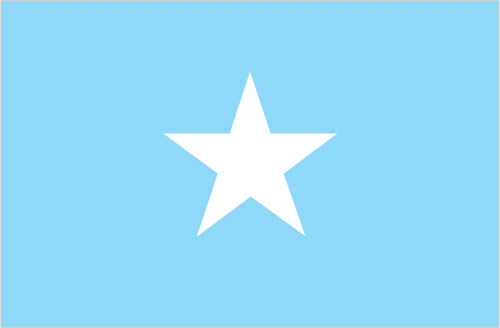

Africa :: SOMALIA
Introduction :: SOMALIA
-
Britain withdrew from British Somaliland in 1960 to allow its protectorate to join with Italian Somaliland and form the new nation of Somalia. In 1969, a coup headed by Mohamed SIAD Barre ushered in an authoritarian socialist rule characterized by the persecution, jailing, and torture of political opponents and dissidents. After the regime's collapse early in 1991, Somalia descended into turmoil, factional fighting, and anarchy. In May 1991, northern clans declared an independent Republic of Somaliland that now includes the administrative regions of Awdal, Woqooyi Galbeed, Togdheer, Sanaag, and Sool. Although not recognized by any government, this entity has maintained a stable existence and continues efforts to establish a constitutional democracy, including holding municipal, parliamentary, and presidential elections. The regions of Bari, Nugaal, and northern Mudug comprise a neighboring semi-autonomous state of Puntland, which has been self-governing since 1998 but does not aim at independence; it has also made strides toward reconstructing a legitimate, representative government but has suffered some civil strife. Puntland disputes its border with Somaliland as it also claims the regions of Sool and Sanaag, and portions of Togdheer. Beginning in 1993, a two-year UN humanitarian effort (primarily in south-central Somalia) was able to alleviate famine conditions, but when the UN withdrew in 1995, having suffered significant casualties, order still had not been restored.In 2000, the Somalia National Peace Conference (SNPC) held in Djibouti resulted in the formation of an interim government, known as the Transitional National Government (TNG). When the TNG failed to establish adequate security or governing institutions, the Government of Kenya, under the auspices of the Intergovernmental Authority on Development (IGAD), led a subsequent peace process that concluded in October 2004 with the election of Abdullahi YUSUF Ahmed as President of a second interim government, known as the Transitional Federal Government (TFG) of the Somali Republic. The TFG included a 275-member parliamentary body, known as the Transitional Federal Parliament (TFP). President YUSUF resigned late in 2008 while UN-sponsored talks between the TFG and the opposition Alliance for the Re-Liberation of Somalia (ARS) were underway in Djibouti. In January 2009, following the creation of a TFG-ARS unity government, Ethiopian military forces, which had entered Somalia in December 2006 to support the TFG in the face of advances by the opposition Islamic Courts Union (ICU), withdrew from the country. The TFP was doubled in size to 550 seats with the addition of 200 ARS and 75 civil society members of parliament. The expanded parliament elected Sheikh SHARIF Sheikh Ahmed, the former ICU and ARS chairman as president in January 2009. The creation of the TFG was based on the Transitional Federal Charter (TFC), which outlined a five-year mandate leading to the establishment of a new Somali constitution and a transition to a representative government following national elections. In 2009, the TFP amended the TFC to extend TFG's mandate until 2011 and in 2011 Somali principals agreed to institute political transition by August 2012. The transition process ended in September 2012 when clan elders replaced the TFP by appointing 275 members to a new parliament who subsequently elected a new president.
Geography :: SOMALIA
-
Eastern Africa, bordering the Gulf of Aden and the Indian Ocean, east of Ethiopia10 00 N, 49 00 EAfricatotal: 637,657 sq kmland: 627,337 sq kmwater: 10,320 sq kmcountry comparison to the world: 45almost five times the size of Alabama; slightly smaller than Texastotal: 2,385 kmborder countries (3): Djibouti 61 km, Ethiopia 1,640 km, Kenya 684 km3,025 kmterritorial sea: 200 nmprincipally desert; northeast monsoon (December to February), moderate temperatures in north and hot in south; southwest monsoon (May to October), torrid in the north and hot in the south, irregular rainfall, hot and humid periods (tangambili) between monsoonsmostly flat to undulating plateau rising to hills in northmean elevation: 410 melevation extremes: lowest point: Indian Ocean 0 mhighest point: Shimbiris 2,416 muranium and largely unexploited reserves of iron ore, tin, gypsum, bauxite, copper, salt, natural gas, likely oil reservesagricultural land: 70.3%arable land 1.8%; permanent crops 0%; permanent pasture 68.5%forest: 10.6%other: 19.1% (2011 est.)2,000 sq km (2012)distribution varies greatly throughout the country; least densely populated areas are in the northeast and central regions, as well as areas along the Kenyan border; most populated areas are in and around the cities of Mogadishu, Marka, Boorama, Hargeysa, and Baidoarecurring droughts; frequent dust storms over eastern plains in summer; floods during rainy seasonfamine; use of contaminated water contributes to human health problems; deforestation; overgrazing; soil erosion; desertificationparty to: Biodiversity, Desertification, Endangered Species, Law of the Sea, Ozone Layer Protectionsigned, but not ratified: none of the selected agreementsstrategic location on Horn of Africa along southern approaches to Bab el Mandeb and route through Red Sea and Suez Canal
People and Society :: SOMALIA
-
11,031,386note: this estimate was derived from an official census taken in 1975 by the Somali Government; population counting in Somalia is complicated by the large number of nomads and by refugee movements in response to famine and clan warfare (July 2017 est.)country comparison to the world: 83noun: Somali(s)adjective: SomaliSomali 85%, Bantu and other non-Somali 15% (including 30,000 Arabs)Somali (official, according to the 2012 Transitional Federal Charter), Arabic (official, according to the 2012 Transitional Federal Charter), Italian, EnglishSunni Muslim (Islam) (official, according to the 2012 Transitional Federal Charter)Somalia scores very low for most humanitarian indicators, suffering from poor governance, protracted internal conflict, underdevelopment, economic decline, poverty, social and gender inequality, and environmental degradation. Despite civil war and famine raising its mortality rate, Somalia’s high fertility rate and large proportion of people of reproductive age maintain rapid population growth, with each generation being larger than the prior one. More than 60% of Somalia’s population is younger than 25, and the fertility rate is among the world’s highest at almost 6 children per woman – a rate that has decreased little since the 1970s.A lack of educational and job opportunities is a major source of tension for Somalia’s large youth cohort, making them vulnerable to recruitment by extremist and pirate groups. Somalia has one of the world’s lowest primary school enrollment rates – just over 40% of children are in school – and one of world’s highest youth unemployment rates. Life expectancy is low as a result of high infant and maternal mortality rates, the spread of preventable diseases, poor sanitation, chronic malnutrition, and inadequate health services.During the two decades of conflict that followed the fall of the SIAD regime in 1991, hundreds of thousands of Somalis fled their homes. Today Somalia is the world’s third highest source country for refugees, after Syria and Afghanistan. Insecurity, drought, floods, food shortages, and a lack of economic opportunities are the driving factors.As of 2016, more than 1.1 million Somali refugees were hosted in the region, mainly in Kenya, Yemen, Egypt, Ethiopia, Djibouti, and Uganda, while more than 1.1 million Somalis were internally displaced. Since the implementation of a tripartite voluntary repatriation agreement among Kenya, Somalia, and the UNHCR in 2013, nearly 40,000 Somali refugees have returned home from Kenya’s Dadaab refugee camp – still houses to approximately 260,000 Somalis. The flow sped up rapidly after the Kenyan Government in May 2016 announced its intention to close the camp, worsening security and humanitarian conditions in receiving communities in south-central Somalia. Despite the conflict in Yemen, thousands of Somalis and other refugees and asylum seekers from the Horn of Africa risk their lives crossing the Gulf of Aden to reach Yemen and beyond (often Saudi Arabia). Bossaso in Puntland overtook Obock, Djibouti, as the primary departure point in mid-2014.0-14 years: 43.15% (male 2,376,526/female 2,383,060)15-24 years: 19.04% (male 1,059,608/female 1,040,343)25-54 years: 31.43% (male 1,795,355/female 1,671,421)55-64 years: 4.2% (male 230,027/female 233,257)65 years and over: 2.19% (male 93,736/female 148,053) (2017 est.)total dependency ratio: 97.4youth dependency ratio: 92.1elderly dependency ratio: 5.3potential support ratio: 18.8 (2015 est.)total: 18.1 yearsmale: 18.3 yearsfemale: 17.9 years (2017 est.)country comparison to the world: 2162% (2017 est.)country comparison to the world: 4939.6 births/1,000 population (2017 est.)country comparison to the world: 913.1 deaths/1,000 population (2017 est.)country comparison to the world: 14-6.5 migrant(s)/1,000 population (2017 est.)country comparison to the world: 201distribution varies greatly throughout the country; least densely populated areas are in the northeast and central regions, as well as areas along the Kenyan border; most populated areas are in and around the cities of Mogadishu, Marka, Boorama, Hargeysa, and Baidoaurban population: 40.5% of total population (2017)rate of urbanization: 4.05% annual rate of change (2015-20 est.)MOGADISHU (capital) 2.138 million; Hargeysa 760,000 (2015)at birth: 1.03 male(s)/female0-14 years: 1 male(s)/female15-24 years: 1.02 male(s)/female25-54 years: 1.07 male(s)/female55-64 years: 0.96 male(s)/female65 years and over: 0.64 male(s)/femaletotal population: 1.01 male(s)/female (2016 est.)732 deaths/100,000 live births (2015 est.)country comparison to the world: 6total: 94.8 deaths/1,000 live birthsmale: 103.3 deaths/1,000 live birthsfemale: 86 deaths/1,000 live births (2017 est.)country comparison to the world: 2total population: 52.8 yearsmale: 50.7 yearsfemale: 54.9 years (2017 est.)country comparison to the world: 2185.8 children born/woman (2017 est.)country comparison to the world: 50.03 physicians/1,000 population (2014)improved:urban: 69.6% of populationrural: 8.8% of populationtotal: 31.7% of populationunimproved:urban: 30.4% of populationrural: 91.2% of populationtotal: 68.3% of population (2011 est.)improved:urban: 52% of populationrural: 6.3% of populationtotal: 23.6% of populationunimproved:urban: 48% of populationrural: 93.7% of populationtotal: 76.4% of population (2011 est.)0.4% (2016 est.)country comparison to the world: 7824,000 (2016 est.)country comparison to the world: 721,700 (2016 est.)country comparison to the world: 55degree of risk: very highfood or waterborne diseases: bacterial and protozoal diarrhea, hepatitis A and E, and typhoid fevervectorborne diseases: dengue fever, malaria, and Rift Valley feverwater contact disease: schistosomiasisanimal contact disease: rabies (2016)8.3% (2016)country comparison to the world: 15323% (2009)country comparison to the world: 9NA
Government :: SOMALIA
-
conventional long form: Federal Republic of Somaliaconventional short form: Somalialocal long form: Jamhuuriyadda Federaalkaa Soomaaliyalocal short form: Soomaaliyaformer: Somali Republic, Somali Democratic Republicetymology: "Land of the Somali" (ethnic group)federal parliamentary republicname: Mogadishugeographic coordinates: 2 04 N, 45 20 Etime difference: UTC+3 (8 hours ahead of Washington, DC, during Standard Time)18 regions (plural - NA, singular - gobolka); Awdal, Bakool, Banaadir, Bari, Bay, Galguduud, Gedo, Hiiraan, Jubbada Dhexe (Middle Jubba), Jubbada Hoose (Lower Jubba), Mudug, Nugaal, Sanaag, Shabeellaha Dhexe (Middle Shabeelle), Shabeellaha Hoose (Lower Shabeelle), Sool, Togdheer, Woqooyi Galbeed1 July 1960 (from a merger of British Somaliland that became independent from the UK on 26 June 1960 and Italian Somaliland that became independent from the Italian-administered UN trusteeship on 1 July 1960 to form the Somali Republic)Foundation of the Somali Republic, 1 July (1960); note - 26 June (1960) in Somalilandhistory: previous 1961, 1979; latest drafted 12 June 2012, approved 1 August 2012 (provisional)amendments: proposed by the federal government, by members of the state governments, the Federal Parliament, or by public petition; proposals require review by a joint committee of Parliament with inclusion of public comments and state legislatures’ comments; passage requires at least two-thirds majority vote in both houses of Parliament and approval by a majority of votes cast in a referendum; constitutional clauses on Islamic principles, the federal system, human rights and freedoms, powers and authorities of the government branches, and inclusion of women in national institutions cannot be amendedmixed legal system of civil law, Islamic law, and customary law (referred to as Xeer)accepts compulsory ICJ jurisdiction with reservations; non-party state to the ICCtcitizenship by birth: nocitizenship by descent only: the father must be a citizen of Somaliadual citizenship recognized: noresidency requirement for naturalization: 7 years18 years of age; universalchief of state: President Mohamed ABDULLAHI Mohamed "Farmaajo" (since 8 February 2017)head of government: Prime Minister Hassan Ali KHAYRE (since 1 March 2017)cabinet: Cabinet appointed by the prime minister, approved by the House of the Peopleelections/appointments: president indirectly elected by the Federal Parliament by two-thirds majority vote in 2 rounds if needed for a single 4-year term; election last held on 8 February 2017 (previously scheduled for 30 September 2016 but postponed repeatedly); prime minister appointed by the president, approved by the House of the Peopleelection results: Mohamed ABDULLAHI Mohamed "Farmaajo" elected president; Federal Parliament second round vote - Mohamed ABDULLAHI Mohamed "Farmaajo" (TPP) 184, HASSAN SHEIKH Mohamud (PDP) 97, Sheikh SHARIF Sheikh Ahmed (ARS) 46description: bicameral Federal Parliament to consist of an Upper House (54 seats; senators elected by state assemblies to serve 4-year terms) and the House of the People (275 seats; members elected by regional delegates to serve 4-year terms)note: the inaugural House of the People was appointed in September 2012 by clan elders; in elections in 2016 and 2017, the Federal Parliament became bicameral with elections scheduled for 10 October 2016 for the Upper House and 23 October to 10 November 2016 for the House of the People; while the elections were delayed, they were eventually held in most regions despite voting irregularities; on 27 December 2016, 41 Upper House senators and 242 House of the People members were sworn inhighest court(s): the provisional constitution stipulates the establishment of the Constitutional Court (consists of 5 judges including the chief judge and deputy chief judge); note - under the terms of the 2004 Transitional National Charter, a Supreme Court based in Mogadishu and an Appeal Court were established; yet most regions have reverted to local forms of conflict resolution, either secular, traditional Somali customary law, or sharia Islamic lawjudge selection and term of office: judges appointed by the president upon proposal of the Judicial Service Commission, a 9-member judicial and administrative body; judge tenure NAsubordinate courts: federal courts; federal member state-level courts; military courts; sharia courtsCosmopolitan Democratic Party [Yarow Sharef ADEN]Daljir Party or DP [Hassan MOALIM]Democratic Green Party of Somalia or DGPS [Abdullahi Y. MAHAMOUD]Democratic Party of Somalia or DPS [Maslah Mohamed SIAD]Green Leaf for Democracy or GLEDHiil QaranJustice and Communist Party [Mohamed NUR]Justice and Development of Democracy and Self-Respectfulness Party or CAHDI [Abdirahman Abdigani IBRAHIM Bile]Liberal Party of SomaliaNational Unity Party (Xisbiga MIdnimo-Quaran) [Abdurahman BAADIYOW]Peace and Development Party or PDPSomali National Party or SNP [Mohammed Ameen Saeed AHMED]Somali People's Party [Mahamud Hassan RAGE]Somali Green Party (local chapter of Federation of Green Parties of Africa)Tayo or TPP [Mohamed Abdullahi MOHAMED]Tiir Party [Fadhil Sheik MOHAMUD]United and Democratic Party [Salad Ali JELLE]United Somali Parliamentariansnumerous political associations and clan and sub-clan factions exist in support of and against political leaders from clans, Federal Member State presidents, and others, including the former and current presidentsACP, AfDB, AFESD, AMF, AU, CAEU (candidate), FAO, G-77, IBRD, ICAO, ICRM, IDA, IDB, IFAD, IFC, IFRCS, IGAD, ILO, IMF, IMO, Interpol, IOC, IOM, IPU, ITSO, ITU, LAS, NAM, OIC, OPCW, OPCW (signatory), UN, UNCTAD, UNESCO, UNHCR, UNIDO, UPU, WFTU (NGOs), WHO, WIPO, WMOchief of mission: Ambassador Ahmed Issa AWAD (since 17 September 2015)chancery: 425 East 61st Street, Suite 702, New York City, NY 10021telephone: [1] (212) 688-9410, 688-5046FAX: [1] (212) 759-0651the US Mission to Somalia, operating out of the US Embassy in Nairobi, Kenya, is headed by Ambassador Stephen M. SCHWARTZ (since 9 August 2016)light blue with a large white five-pointed star in the center; the blue field was originally influenced by the flag of the UN, but today is said to denote the sky and the neighboring Indian Ocean; the five points of the star represent the five regions in the horn of Africa that are inhabited by Somali people: the former British Somaliland and Italian Somaliland (which together make up Somalia), Djibouti, Ogaden (Ethiopia), and the North East Province (Kenya)leopard; national colors: blue, whitename: "Qolobaa Calankeed" (Every Nation Has its own Flag)lyrics/music: lyrics/music: Abdullahi QARSHEnote: adopted 2012; written in 1959regional and local governing bodies continue to exist and control various areas of the country, including the self-declared Republic of Somaliland in northwestern Somalia
Economy :: SOMALIA
-
Despite the lack of effective national governance, Somalia maintains an informal economy largely based on livestock, remittance/money transfer companies, and telecommunications. Somalia's government lacks the ability to collect domestic revenue and external debt – mostly in arrears – was estimated at 93% of GDP in 2014.Agriculture is the most important sector, with livestock normally accounting for about 40% of GDP and more than 50% of export earnings. Nomads and semi-pastoralists, who are dependent upon livestock for their livelihood, make up a large portion of the population. Economic activity is estimated to have increased by 3.7% in 2016 because of growth in the agriculture, construction and telecommunications sector. Somalia's small industrial sector, based on the processing of agricultural products, has largely been looted and the machinery sold as scrap metal.In recent years, Somalia's capital city, Mogadishu, has witnessed the development of the city's first gas stations, supermarkets, and airline flights to Turkey since the collapse of central authority in 1991. Mogadishu's main market offers a variety of goods from food to electronic gadgets. Hotels continue to operate and are supported with private-security militias. Formalized economic growth has yet to expand outside of Mogadishu and a few regional capitals, and within the city, security concerns dominate business. Telecommunication firms provide wireless services in most major cities and offer the lowest international call rates on the continent. In the absence of a formal banking sector, money transfer/remittance services have sprouted throughout the country, handling up to $1.6 billion in remittances annually, although international concerns over the money transfers into Somalia continues to threaten these services’ ability to operate in Western nations.$16.77 billion (2016 est.)$16.04 billion (2015 est.)$15.32 billion (2014 est.)note: data are in 2016 US dollarscountry comparison to the world: 177$6.336 billion (2015 est.)3.2% (2016 est.)3.6% (2015 est.)3.6% (2014 est.)country comparison to the world: 72$NA (2016 est.)$NA (2015 est.)$NA (2014 est.)country comparison to the world: 230household consumption: 72.1%government consumption: 8.7%investment in fixed capital: 19.8%investment in inventories: 0.8%exports of goods and services: 0.3%imports of goods and services: -1.7% (2015 est.)agriculture: 60.2%industry: 7.4%services: 32.5% (2013 est.)bananas, sorghum, corn, coconuts, rice, sugarcane, mangoes, sesame seeds, beans; cattle, sheep, goats; fishlight industries, including sugar refining, textiles, wireless communication3.5% (2014 est.)country comparison to the world: 654.154 million (2016 est.)country comparison to the world: 91agriculture: 71%industry and services: 29% (1975)NA%NA%lowest 10%: NA%highest 10%: NA%revenues: $145.3 millionexpenditures: $151.1 million (2014 est.)2.5% of GDP (2014 est.)country comparison to the world: 219-0.1% of GDP (2014 est.)country comparison to the world: 46NA1.5% (2016 est.)-71.1% (2014 est.)country comparison to the world: 109NA%NA%$-640 million (2016 est.)country comparison to the world: 106$819 million (2014 est.)$779 million (2013 est.)country comparison to the world: 162livestock, bananas, hides, fish, charcoal, scrap metalSaudi Arabia 37.2%, Oman 22.7%, UAE 16.3% (2016)$3.482 billion (2014 est.)$3.322 billion (2013 est.)country comparison to the world: 135manufactures, petroleum products, foodstuffs, construction materials, qatIndia 26.3%, China 20.8%, Oman 9.1%, Kenya 8.3%, Turkey 6%, Malaysia 4.3%, Brazil 4.2% (2016)$30.45 million (2014 est.)country comparison to the world: 173$5.3 billion (31 December 2014 est.)$2.892 billion (31 December 2015 est.)country comparison to the world: 131$NASomali shillings (SOS) per US dollar -23,960 (2016 est.)20,227 (2013 est.)
Energy :: SOMALIA
-
population without electricity: 8,900,000electrification - total population: 15%electrification - urban areas: 33%electrification - rural areas: 4% (2013)344 million kWh (2015 est.)country comparison to the world: 177319.9 million kWh (2015 est.)country comparison to the world: 1820 kWh (2016 est.)country comparison to the world: 1980 kWh (2016 est.)country comparison to the world: 20281,000 kW (2015 est.)country comparison to the world: 18298.8% of total installed capacity (2015 est.)country comparison to the world: 340% of total installed capacity (2015 est.)country comparison to the world: 1830% of total installed capacity (2015 est.)country comparison to the world: 2041.2% of total installed capacity (2015 est.)country comparison to the world: 1340 bbl/day (2016 est.)country comparison to the world: 1950 bbl/day (2014 est.)country comparison to the world: 1910 bbl/day (2014 est.)country comparison to the world: 1900 bbl (1 January 2017 es)country comparison to the world: 1940 bbl/day (2014 est.)country comparison to the world: 1985,700 bbl/day (2015 est.)country comparison to the world: 1740 bbl/day (2014 est.)country comparison to the world: 1985,679 bbl/day (2014 est.)country comparison to the world: 1630 cu m (2013 est.)country comparison to the world: 1950 cu m (2013 est.)country comparison to the world: 1310 cu m (2013 est.)country comparison to the world: 1830 cu m (2013 est.)country comparison to the world: 1885.663 billion cu m (1 January 2017 es)country comparison to the world: 94900,000 Mt (2013 est.)country comparison to the world: 166
Communications :: SOMALIA
-
total subscriptions: 48,000subscriptions per 100 inhabitants: less than 1 (July 2016 est.)country comparison to the world: 157total: 6,653,040subscriptions per 100 inhabitants: 62 (July 2016 est.)country comparison to the world: 113general assessment: the public telecom system was almost completely destroyed or dismantled during the civil war; private companies offer limited local fixed-line service, and private wireless companies offer service in most major cities, while charging some of the lowest rates on the continentdomestic: seven networks compete for customers in the mobile sector; some of these mobile-service providers offer fixed-line and Internet servicesinternational: country code - 252; Mogadishu is a landing point for the EASSy fiber-optic submarine cable system linking East Africa with Europe and North America; this connection ended the country's expensive satellite-dependent Internet access (2016)2 private TV stations rebroadcast Al-Jazeera and CNN; Somaliland has 1 government-operated TV station and Puntland has 1 private TV station; the transitional government operates Radio Mogadishu; 1 SW and roughly 10 private FM radio stations broadcast in Mogadishu; several radio stations operate in central and southern regions; Somaliland has 1 government-operated radio station; Puntland has roughly a half-dozen private radio stations; transmissions of at least 2 international broadcasters are available (2007).sototal: 203,366percent of population: 1.9% (July 2016 est.)country comparison to the world: 164
Transportation :: SOMALIA
-
number of registered air carriers: 1inventory of registered aircraft operated by air carriers: 1annual passenger traffic on registered air carriers: 251,652annual freight traffic on registered air carriers: 0 mt-km (2015)6O (2016)61 (2013)country comparison to the world: 81total: 6over 3,047 m: 42,438 to 3,047 m: 11,524 to 2,437 m: 1 (2013)total: 55over 3,047 m: 12,438 to 3,047 m: 51,524 to 2,437 m: 20914 to 1,523 m: 23under 914 m: 6 (2013)total: 22,100 kmpaved: 2,608 kmunpaved: 19,492 km (2000)country comparison to the world: 105total: 1by type: cargo 1 (2008)country comparison to the world: 155major seaport(s): Berbera, Kismaayo
Military and Security :: SOMALIA
-
National Security Force (NSF): Somali Army (2011)18 is the legal minimum age for compulsory and voluntary military service (2012)despite a dramatic drop in the number of attacks in 2016, the International Maritime Bureau continues to report the territorial and offshore waters in the Gulf of Aden and Indian Ocean as a region of significant risk for piracy and armed robbery against ships; during the first half of 2017, nine vessels were attacked or hijacked compared with two in 2016; Operation Ocean Shield, the NATO naval task force established in 2009 to combat Somali piracy, concluded its operations in December 2016 as a result of the drop in reported incidents over the last few years; additional anti-piracy measures on the part of ship operators, including the use of on-board armed security teams, have reduced piracy incidents in that body of water; Somali pirates tend to be heavily armed with automatic weapons and rocket propelled grenades; the use of "mother ships" from which skiffs can be launched to attack vessels allows these pirates to extend the range of their operations hundreds of nautical miles offshore
Transnational Issues :: SOMALIA
-
Ethiopian forces invaded southern Somalia and routed Islamist Courts from Mogadishu in January 2007; "Somaliland" secessionists provide port facilities in Berbera to landlocked Ethiopia and have established commercial ties with other regional states; "Puntland" and "Somaliland" "governments" seek international support in their secessionist aspirations and overlapping border claims; the undemarcated former British administrative line has little meaning as a political separation to rival clans within Ethiopia's Ogaden and southern Somalia's Oromo region; Kenya works hard to prevent the clan and militia fighting in Somalia from spreading south across the border, which has long been open to nomadic pastoralistsrefugees (country of origin): 9,941 (Yemen) (2017)IDPs: 1,106,751 (civil war since 1988, clan-based competition for resources; 2011 famine; insecurity because of fighting between al-Shabaab and the Transitional Federal Government's allied forces) (2017)